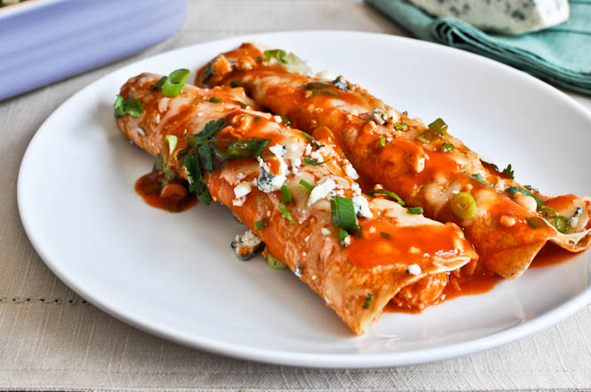

Ik ga jullie hier vertellen hoe je Burrito's kan maken. Burito's komt oorspronkelijk uit Mexico. Een burito bestaat uit bonen, vlees en een tortillia. Burrito komt door het Mexicaanse woord 'burro' en dit betekend ezel. Dus je eet eigenlijk een ezeltje. In de Verenigde Staten wordt een burrito gevuld met rijst, bonen, sla, salsa, vlees, guacamole, kaas en sour cream. Pablo Francisco Terminator
